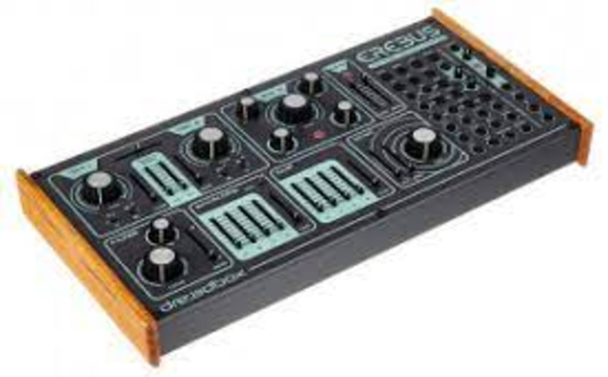

L'Erebus V3 de DREADBOX
599 €
Un synthétiseur modulaire fait main
Entièrement analogique
Synthétiseur paraphonique 2 voix
3 oscillateurs
2 oscillateurs avec Glide individuel
Echo Lo-Fi
Générateur de bruit blanc
LFO
Générateur d'horloge
Sample & Hold patchables
35 points de patch
Dimensions: 350 x 195 x 170 mm
Poids: 2380 g
Le dieu des ténèbres connaît une renaissance impressionnante avec l'Erebus V3. Plus puissant que jamais, l’Erebus profite d’un troisième oscillateur et délivre un son de base beaucoup plus puissant que son ancêtre l’Erebus V2, l'un des synthétiseurs « Desktop » analogiques les plus vendus ces dernières années. L’Erebus V3 dispose de 35 points de patch (au lieu de 14 dans l'Erebus V2) et ouvre des possibilités qui vont bien au-delà des autres synthétiseurs analogiques de cette gamme de prix. Contrôle MIDI ou CV/Gate. Le VCF et un délay merveilleusement rétro apportent la touche finale qui carractérise le son fabuleux du légendaire dieu Erebus.